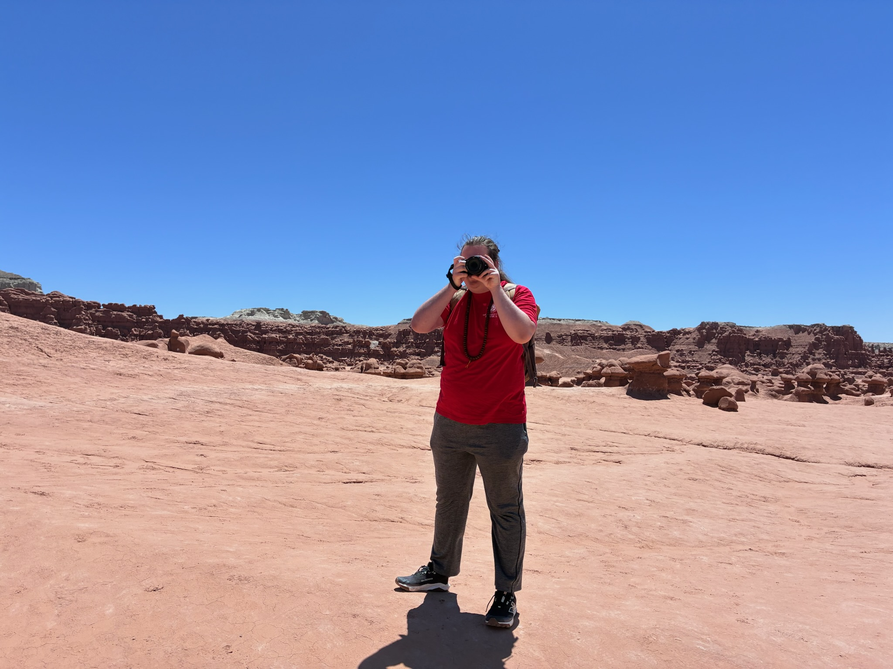

Over the past few years I have gotten into photography and have been slowly improving at it!
All of these pictures were taken by me on my Sony RX10 IV that I was gifted by a very kind family member.
I am very much still learning and a lot of my pictures aren't the best, but every once in a while I get one I am quite happy with! I have compiled some of those ones here.
Use the links on top to see different categories.

This is a picture of me taking a picture in Goblin Valley State Park (big thanks to Erika for taking this picture).